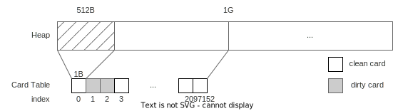

Evacuation（转移）
Evacuation 直译是“驱逐”，作用是把所选区域内的存活对象转移到空闲区域，之后被转移的区域只剩下死亡的对象，可以被释放，可以类比成标记复制里的“复制”阶段。
G1 里的转移
为了更好地理解下面提到的一些机制的作用，我们先对 G1 转移有个整体的理解。
G1 转移时只会处理部分区域，通常称为回收集合（Collection Set，简称 CSet），下图里区域 B 和 C 就是 CSet。回收时，GC Root 直接可达的对象 h，以及间接可达的 f 和 i 都会被复制到空闲区域 D，复制时，相应的指针也会指向新的对象。转移后，CSet 里剩下的对象都是垃圾，最后把 CSet 释放即可。

这张图隐藏了两个细节，它们是理解 G1 evacuation 的重要前提：
- C1 在判断 CSet 里的对象是否存活时，并不会利用并发标记的位图，而是自己重新从根集合进行扫描，这点与 CMS 不同，要特别注意
- 判断 CSet 中对象是否存活，除了查看 GC Root 的引用外，也需要判断是否存在非 CSet 区域中存活对象的引用（上图的区域
A），判断非 CSet 区域中对象是否存活，则不再从 GC root 递归扫描，而是直接利用并发标记的位图，且也会考虑区域里的TAMS
另外 G1 的实际实现是包含分代处理的，我们先把本章说的算法当成是纯的 Mixed GC/Full GC 来理解。
记忆集合（Remember Set）
上文提到，G1 在判断 CSet 里的对象是否存活时，除了扫描 GC Roots，也会扫描非CSet
区域里其它对象对本区域的引用（如上节图中扫描区域 A 发现对象 b 引用了 f）。
但是，回收的区域只占整个堆的小部分，如果需要扫描所有的非 CSet 区域，那不就等价于把整体堆重新标记了一遍？所以为了提升效率，我们需要空间换时间。记忆集合（Remember Set，简称 RSet）就是这样一个结构，帮助我们快速判断：对于区域 X，有哪些其它区域“可能”包含引用了本区域内对象的对象。
做个类比，比如上学时你在 1 班，2 班的小明，5 班小刚都欠你钱。你可以记个帐本，里面写 2 班/小明，5 班/小刚，这个帐本是精确到人的。如果欠钱的人特别多，帐本记不下，于是简化成只记班级 2 班，5 班，收钱的时候就挨个问对应班级的同学“你是不是欠我钱”。但如果每个班欠钱的只有几个，收钱时却要询问全班的人，很浪费时间。于是可以优化帐本上，记到某班某组：2 班/1 组，5 班/3 组，这样收钱时不需要问全班人，只需要问一个组的人就行了。
记忆集合 RSet 就是这个帐本，班级就是区域，而班级里的“组”就是下面要介绍的“卡表（Card Table）”。
卡表（Card Table)
逻辑上，我们把一段内存空间按 512B1 切成小块，每个块我们用 1B 的空间记录一些关于这个块的信息，如最近这块内存里有没有修改。实现上我们用一个数组来记录块信息，这个数组就称作卡表（Card Table），数组的元素就称为卡片（Card）。

因为空间的划分是固定大小的，所以要定位一个对象所在的卡表的索引，只需要计算
(objec_address - heap_start) / 512 即可。另外由于卡片大小是 1B，可以记录很多状态，本章中只关心两种：
- 净卡片（clean）
- 脏卡片（dirty）
RSet 的结构
每个区域都有一个 RSet。一个 RSet 是一个哈希表，记录的是“X 区域的 Y Card 里可能有对象引用了当前区域的某个对象”。表的 Key 是 X 区域的地址，表的Value 是X 区域的某干个 Card 索引，如下图所示：

可以看到 RSet 记录的粒度只到 Card 级别，那具体 Card 里哪个对象引用了当前区域的哪个对象？这部分信息 RSet 给不出，因此在 evacuation 时，需要扫描 Card 里的所有对象才行。但是相比于扫描整个堆，这个工作量已经小得多了。
RSet 写屏障
上面我们理解了如何使用 RSet 来帮助我们扫描根集合，那 RSet 的信息是如何更新维护的呢？和 SATB 的维护类似，RSet 也是使用写屏障来维护的，但不同于 SATB 中的 pre-write barrier，RSet 需要使用 post-write barrier，因为更新 RSet 需要使用的是修改后的值。RSet 写屏障伪代码如下2：
1. def evacuation_write_barrier(obj, field, newobj):
2. check = obj ^ newobj
3. check = check >> LOG_OF_HEAP_REGION_SIZE
4. if newobj == NULL:
5. check = 0
6. if check == 0:
7. return
8.
9. if not is_dirty_card(obj):
10. to_dirty(obj)
11. enqueue($current_thread.dirty_card_queue, obj)
12.
13. *field = newobj
这份伪代码不能很好地展示为什么叫 post-write barrier，但大体逻辑正常看，有几个注意点：
第 2 行到第 7 行，是在检查 obj 和 newobj 是不是在同一个区域，如果 obj
和 newobj 在同一个区域，则它们的高位相同，于是第二行的 XOR 操作得到的结果就会是 0，于是通过第 6 行的 if 语句。
第 9 行要注意引用的方向，因为要执行的是 obj.field = newobj，是 obj 引用newobj，所以更新 RSet 的时候，是要往 newobj 的 RSet 里加入 obj 的 card。第 9 行的判断如果通过，则会把 obj 对应的 Card 标成 dirty，并将 obj 加入
RSet 日志队列 dirty_card_queue 中。
这里的 dirty_card_queue 和 SATB 队列机制基本一样，也是每个线程本地有个队列，如果本地队列满了就添加到全局队列中，有专门的维护线程来处理队列里的元素。队列的元素是 Card 的索引。如下图：

DirtyCardQueueSet 维护线程
DirtyCardQueueSet 维护线程会与 mutator 并发执行，作用是消费 DirtyCardQueueSet 集合并更新RSet。具体来说是这么几件事：
- 从 DirtyCardQueueSet 中取出 DirtyCardQueue，并从头开始扫描
- 每次取出一个 Card Index，先把对应的 Card 标记成 clean
- 扫描 Card 中的所有对象中的引用
- 在引用所在区域的 RSet 添加当前 Card
步骤如下图：

DirtyCardQueueSet 集合中的数量超过阈值（默认为 5）时，维护线程启动，直到数量降低至阈值的 1/4 以下。
另外要注意，整个 RSet 的维护机制，从逻辑上和并发标记毫无关系，是完全独立的机制。当然从实现上可以做一些优化，比如 JDK 11中 已经在标记阶段增加了重建 RSet 的步骤。
热卡片
如果有某个 Card 中的对象会频繁修改，我们把这样的 Card 称为热卡片（hoto card）。热卡片会频繁被加入 DirtyCardQueue，也会维护线程频繁处理，增加空间和时间的消耗，因此需要特殊处理。
G1 会维护一个计数表，记录从上次 evacuation 以来，哪些卡片变成 dirty 过，及对应的次数。当一个卡片被标记为 dirty 时，如果它的计数超过了阈值（默认是4），则会被加入热队列的尾部，加入热队列的卡片不会被 DirtyCardQueueSet 维护线程处理，在evacuation 时会单独处理。另外热队列的大小是固定的（默认 1KB），如果队列满了，会从队列头部取出较老的 Card，把它作为普通 Card 处理。
evacuation 步骤
有了 RSet 的信息 evacuation 的步骤就比较清晰了：
- 选择要回收的区域，即 CSet。这个步骤会利用并发标记里统计的存活计数信息
- 根转移。这里指的是 CSet 里被根集合（GC Roots 及不在 CSet 中的区域中的对象）直接引用的对象
- 其它对象转移。指以 #2 为起点，扫描所有的可达的子孙对象并转移
整个 evacuation 都是 STW。
① CSet 选择
G1 是 Garbage First 简称，说的是 G1 会优先回收垃圾。另一方面 G1 需要尽可能满足用户设定的目标停顿时间，因此 G1 的做法是：
- 记录每次回收的一些时间信息，在并发标记结束时会计算每个区域的转移效率（GC efficiency），并按转移效率从高到低排序
- CSet 选择时，会按排好的顺序依次计算回收该区域所需时间的预测值，直到 CSet 回收的总时间预测值快要超过用户设置的目标停顿时间为止
第一步里换转移效率排序反映了“Garbage First”，而第二步里则是实现用户设定停顿时间的具体方法。
转移效率的计算公式是 可回收的字节数 / 转移所需时间，代表“单位时间可回收的字节数”，通常一个区域存活数量越多，可回收字节数越少（容易理解），同时转移所需要的时间也越多，因为对象复制的时间越长。可以简单地理解成垃圾越多的区域，转移效率越高。
② 根转移
根转移的对象包括这么几类3：
- 由 GC Roots 直接引用的对象
- 由非 CSet 区域中存活对象直接引用
根转移的伪代码如下4：
1. def evacuate_roots():
2. for r in $roots:
3. if is_into_collection_set(*r):
4. *r = evacuate_obj(r)
5.
6. force_update_rs()
7. for region in $collection_set:
8. for card in region.rs_cards:
9. scan_card(region, card)
10.
11. def scan_card(region, card):
12. for obj in objects_in_card(card):
13. if is_marked(obj) or obj >= region.prevTAMS:
14. for child in children(obj):
15. if is_into_collection_set(*child):
16. *child = evacuate_obj(obj)
其中第 2 行到第 5 行是扫描 GC Roots，如果引用的对象在 CSet 中则做转移操作。容易理解。
第 6 行 force_update_rs 是将 DirtyCardQueue（包括本地和全局队列）中还未处理的 Card 做扫描，当然还包括热卡片队列中的 Card。
第 7 行到第 9 行是通过遍历 RSet 来扫描由非 CSet 区域中存活对象对本区域的引用。
第 11 行开始是扫描 Card 里的对象。注意第 13 行，在具体扫描 Card 时，会判断一个对象是否有标记，这个好理解。另一个条件是它是否在prevTAMS 之后，这个条件就是
SATB 的假设，如果地址在 prevTAMS 之后，则隐式认为该对象是存活的。
evacuate_obj
具体转移某个对象的逻辑会比较复杂，除了复制对象本身，还需要做比较多的信息维护，步骤如下：
- 将对象
a复制到空间区域，记为a' - 将对象
a的对象头修改成a'的地址，这个指针也叫 forwarding5 指针 - 遍历
a'的所有字段，如果字段指向 CSet 内，则将字段的地址加入转移队列中 - 针对
a'字段的引用，如果不在 CSet 内，则需要更新对应区域的 RSet - 针对引用方（如
d.field2），需要更新a'所在区域的 RSet，增加d.field2所在的Card - 更新引用方指针的值（
d.field2），置为复制后的地址a'
可能参考下图，可能更直观6：

对应的伪代码如下7：
1. def evacuate_obj(ref):
2. from = *ref
3.
4. if from.forwarded:
5. to = copy_to_survivor_space(from)
6. else:
7. to = from.forwarded
8.
9. *ref = to // ⑥
10.
11. if !in_same_region(ref, to):
12. update_rs(ref, to) // ⑤
13.
14. def copy_to_survivor_space(from):
15. to = allocate($free_region, from.size)
16. copy_data(from, to, from.size) // ①
17. from.forwarded = to // ②
18.
19. for child in to.children:
20. if is_into_collection_set(*child):
21. enqueue($evacuate_queue, child) // ③
22. else:
23. update_rs(child, *child) // ④
24.
25. return to
26.
27. def update_rs(from, to):
28. from_region = region_of(from)
29. to_region = region_of(to)
30. push(card(from), to_region.rs_cards)
参数 ref 是引用方，第 2 行得到的 from 是待转移对象。
第 4 行到第 7 行会首先判断 from 对象是否已经转移过，如果转移过就读取
forwarding 指针指向的对象，即目标区域的对象。forwarding 指针是指原对象 a 的对象头的内容改写成了 a' 的地址，而由于对象的地址会对齐到“字”，所以可以用其中的一个比特来标记它是 forwarding 指针，因此不需要额外空间。
第 9 行是将转移后的对象地址赋给 ref 对应步骤 ⑥。
第 11 行和第 12 行对应步骤 ⑤，维护转移后对象 to 所在区域的 RSet，由于 RSet
记录的是跨区域的引用关系，所以有第 11 行的判断条件，如果在同一区域，可以跳过。
第 15 行到第 17 行对应步骤 ①、②，真正执行对象的复制，并设置 forwarding 指针。
第 19 到第 23 行是扫描对象的域，根据指向的对象是否在 CSet 里有不同处理，在 CSet 的加入扫描队列，不在 CSet 的则对应步骤 ④，需要更新对象所在区域的 RSet。
第 27 行的 update_rs 作用是更新 to 对象所在区域的 RSet，伪代码里写得比较直接，实际的实现视情况可能不会直接更新 RSet，而是都统一添加到 DirtyCardQueue 里，最后统一扫描。
另外注意第 20 行如果 child 指向 CSet，则会执行第 21 行，跳过 23 行，这并不意味着它的 RSet 就不需要维护了，后续在步骤 ③ 消费队列时还是会通过执行evacuate_obj执行到第 11 行来做 RSet 的维护。
③ 转移
根转移的过程中会把引用的对象加入转移队列（上节代码中的第 21 行），这个步骤里会消费转移队列，递归地遍历所有引用对象并转移。伪代码如下：
def evacuate_follower():
while !$evacuate_queue.is_empty:
ref = dequeue($evacuate_queue)
evacuate_obj(ref)
核心逻辑和根转移里相同，只是套了层壳来遍历队列。这个步骤结束后，所有 CSet内的对象都转移完成。
与 CMS 的区别
如果之前了解过 CMS 收集器，那么在学习 G1 时要注意与 CMS 的一些区别：
- CMS 在回收时会直接看标记的结果，只复制带标记的对象，而 G1 在转移时会自己重新遍历引用，标记只在 scan_card 时使用。
- G1 在 evacuation 时需要 STW，因为要修复引用的指针，而 CMS 在 Sweep 时不会移动对象所以可以并发。但是 Sweep 过程中如果新增对象则可能会被误杀（新对象没有标记），所以 CMS 内部会给 free list 加锁。但这样的话，Sweep 过程中 mutator 如果新建对象会卡住
- 标记时，CMS 解决标记遗漏，使用的是 incremental update 的机制，而 G1 使用的是 SATB 机制。所以看 CMS 时接触 Card 概念，是用在标记时处理 incremental update 的，而G1 的 Card 主要是在 evacuation 时使用，虽然作用类似。
- CMS Full GC 只回收 Old Gen，加上它是 Incremental Update 机制，导致在 STW Remark 时需要扫描所有根集合，此时所有的 Young Gen 也都隐式做为存活对象进行扫描。相比之下，G1 在 Remark 时只需要额外标记 STAB 队列即可，当然 G1 在 Evacuation 也需要扫描 Young Gen，但扫描的同时也会回收。
总结
G1 每次转移只会转移部分区域（称为 CSet），转移时会自己重新遍历引用而不是直接复用标记的结果。在判断 CSet 中的对象是否存活时，需要扫描“根集合”，根集合除了 GC
Roots 外，也包含了不在 CSet 区域里的对象。为了减少需要扫描的对象，G1 通过 RSet
来维护区域间的引用关系，于是只会搜索那些存在对当前区域引用的区域的 Card。在判断 Card 内的对象是否存活时，会利用并发标记的结果，以及 SATB 时做的 prevTAMS
信息。
转移的过程就是一个遍历“森林”的过程。在实际转移对象的过程中，除了对象的复制， forwarding 指针的维护外，还需要维护各种情况下 RSet 的正确性。
JDK 18 引入的 JDK-8272773 允许用户自定义 Card 大小
摘自书《深入 Java 虚拟机》第 3.3 节
在《深入 Java 虚拟机》中还包含一类“并发标记中处理的对象”，实际包含了 SATB 本地队列和全局队列中的对象，也包含在 $root 里。因为如果其中的对象转移了，队列里的指针也需要更新。但实际在 JDK 11 的代码里，做法是把
SATB 中任何指向 CSet 的指针都移除队列了。再配合标记中的根区域扫描，在 Young
GC 的 Evacuation 阶段，也就不需要把 SATB 队列中的对象作为根了。
摘自书《深入 Java 虚拟机》第 3.8 节，并做少量修改
后续如果顺着其它引用要转移 a 时，如果通过 a 的对象头发现它是 forwarding 指针，则会跳过转移，直接返回 forwarding 指向的新地址。另一方面不用担心 forwarding 指针占用空间，它只会在转移时存在，转移结束就会被释放，而转移又是 STW 的。
图摘自书《深入 Java 虚拟机》第 3.8.1 节，并做少量修改
这里的代码是参考源码写的，和书《深入 Java 虚拟机》第 3.8.1 节的代码不同